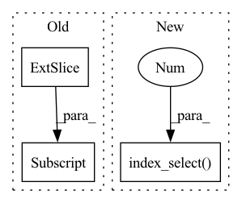

Pattern ID :5810

Before Change
// loss cycle: preserving source characteristics
s_hat_cyc = self.E(x_real, num_domains=2)
s_hat_org = torch.index_select(torch.stack(s_hat_cyc, 1), 1, label_org.squeeze().long())[:, 0, :]
x_fake_cyc = self.G(self.G(x_real, g_s_tilde_trg), s_hat_org)
g_loss_cyc = self.l1_loss(x_real, x_fake_cyc)
// loss style diversification:style diversification
After Change
// loss cycle: preserving source characteristics
s_hat_cyc = self.E(x_real, num_domains=self.num_domains)
// s_hat_org = torch.index_select(torch.stack(s_hat_cyc, 1), 1, label_org.squeeze().long())[:, 0, :]
s_hat_org = torch.squeeze(torch.stack([torch.index_select(x, 0, i) for x, i in
zip(torch.chunk(torch.stack(s_hat_cyc, 1), chunks=self.num_domains, dim=1),
label_org.squeeze().long())]))
In pattern: SUPERPATTERN
Frequency: 7
Non-data size: 3
Instances
Fragment ID: 20474792
Project Name: habout632/stargan2
Commit Name: 0b52989bbcacae42180e9b18ea967df0b78a0d86
Time: 2020-03-11
Author: jifeng.yin@silknets.com
File Name: stargan2_solver.py
M Class Name: Solver
N Class Name: Solver
M Method Name: train_generator(4)
N Method Name: train_generator(4)
M Parent Class: object
N Parent Class: object
M File Name: stargan2_solver.py
N File Name: stargan2_solver.py
M Start Line: 279
M End Line: 285
N Start Line: 281
N End Line: 294
'>
Before Change
def forward(self, x):
x = super().forward(x)
x = pad(x, (0, 0, 0, 0, 0, 1))
expanded = x[:, self.select_idxs]
// idxs = self.select_idxs[None, :, None, None].expand(x.shape[0], self.select_idxs.shape[0], *x.shape[2:])
// expanded = torch.gather(x, dim=1, index=idxs)
After Change
// self.idxs_cache = index
// expanded = torch.scatter(zeros, 1, index, x)
expanded = torch.index_select(x, 1, self.select_idxs)
return expanded + self.bf if self.use_bf else expanded
def __repr__(self):
'>
Fragment ID: 20474795
Project Name: eidoslab/simplify
Commit Name: ef34fce7afef6149c0ee33243893d093013ba1ce
Time: 2021-07-09
Author: andr.bragagnolo@gmail.com
File Name: simplify/layers.py
M Class Name: ConvExpand
N Class Name: ConvExpand
M Method Name: forward(2)
N Method Name: forward(2)
M Parent Class: nn.Conv2d
N Parent Class: nn.Conv2d
M File Name: simplify/layers.py
N File Name: simplify/layers.py
M Start Line: 50
M End Line: 51
N Start Line: 50
N End Line: 65
'>
Before Change
if zeros.shape[0] != x.shape[0]:
zeros = self.zeros.expand(x.shape[0], *self.zeros.shape[1:])
index = self.idxs[None, :, None, None].expand_as(x)
self.zero_cache = zeros
self.idxs_cache = index
After Change
// self.idxs_cache = index
// expanded = torch.scatter(zeros, 1, index, x)
expanded = torch.index_select(x, 1, self.select_idxs)
return expanded + self.bf if self.use_bf else expanded
def __repr__(self):
'>
Fragment ID: 20474797
Project Name: eidoslab/simplify
Commit Name: 65935c5059409f187aab8fb7de55ead77a826888
Time: 2021-07-05
Author: andr.bragagnolo@gmail.com
File Name: simplify/layers.py
M Class Name: ConvExpand
N Class Name: ConvExpand
M Method Name: forward(2)
N Method Name: forward(2)
M Parent Class: nn.Conv2d
N Parent Class: nn.Conv2d
M File Name: simplify/layers.py
N File Name: simplify/layers.py
M Start Line: 34
M End Line: 45
N Start Line: 48
N End Line: 61
'>
Before Change
if zeros.shape[0] != x.shape[0]:
zeros = self.zeros.expand(x.shape[0], self.bf.shape[0], *self.zeros.shape[2:])
index = self.idxs[None, :, None, None].expand_as(x)
self.zero_cache = zeros
self.idxs_cache = index
After Change
// self.idxs_cache = index
// expanded = torch.scatter(zeros, 1, index, x)
expanded = torch.index_select(x, 1, self.select_idxs)
return expanded + self.bf[:, None, None].expand_as(expanded)
'>
Fragment ID: 20474798
Project Name: eidoslab/simplify
Commit Name: 65935c5059409f187aab8fb7de55ead77a826888
Time: 2021-07-05
Author: andr.bragagnolo@gmail.com
File Name: simplify/layers.py
M Class Name: BatchNormExpand
N Class Name: BatchNormExpand
M Method Name: forward(2)
N Method Name: forward(2)
M Parent Class: nn.BatchNorm2d
N Parent Class: nn.BatchNorm2d
M File Name: simplify/layers.py
N File Name: simplify/layers.py
M Start Line: 79
M End Line: 90
N Start Line: 106
N End Line: 119
'>
Before Change
indexy[i] : indexy[i] + leny,
]
if FLAGS.flip_horizontal is True and np.random.randint(0, 2) == 1:
ten = ten[:, :, :, ::-1]
new_tensor_list.append(ten)
tensor = np.concatenate(new_tensor_list, 0)
return torch.from_numpy(tensor.astype(np.float32))
After Change
indexy[i] : indexy[i] + leny,
]
if FLAGS.flip_horizontal is True and np.random.randint(0, 2) == 1:
ten = ten.index_select(3, inv_idx)
new_tensor_list.append(ten)
tensor = torch.cat(new_tensor_list, 0)
return tensor
'>
Fragment ID: 20474799
Project Name: taufikxu/triple-gan
Commit Name: 5f4d74f329e6b493abfbc1b1d9fe79acb0eda810
Time: 2020-06-19
Author: kunxu.thu@gmail.com
File Name: library/data_iters.py
M Class Name: AugmentWrapper
N Class Name: AugmentWrapper
M Method Name: __call__(2)
N Method Name: __call__(2)
M Parent Class: object
N Parent Class: object
M File Name: library/data_iters.py
N File Name: library/data_iters.py
M Start Line: 78
M End Line: 110
N Start Line: 83
N End Line: 106
'>
Before Change
s_tilde = self.F(z, num_domains=2)
// Compute loss with fake images.
s_tilde_trg = torch.index_select(torch.stack(s_tilde, 1), 1, label_trg.squeeze().long())[:, 0, :]
return s_tilde_trg
def classification_loss(self, logit, target, dataset="CelebA"):
After Change
// Compute loss with fake images.
// s_tilde_trg = torch.index_select(torch.stack(s_tilde, 1), 1, label_trg.squeeze().long())[:, 0, :]
s_tilde_trg = torch.squeeze(torch.stack([torch.index_select(x, 0, i) for x, i in zip(torch.chunk(torch.stack(s_tilde, 1), chunks=num_domains, dim=1), label_trg.squeeze().long())]))
return s_tilde_trg
def classification_loss(self, logit, target, dataset="CelebA"):
'>
Fragment ID: 20474800
Project Name: habout632/stargan2
Commit Name: 0b52989bbcacae42180e9b18ea967df0b78a0d86
Time: 2020-03-11
Author: jifeng.yin@silknets.com
File Name: stargan2_solver.py
M Class Name: Solver
N Class Name: Solver
M Method Name: generate_style_code(3)
N Method Name: generate_style_code(2)
M Parent Class: object
N Parent Class: object
M File Name: stargan2_solver.py
N File Name: stargan2_solver.py
M Start Line: 433
M End Line: 436
N Start Line: 436
N End Line: 447
'>
Before Change
def forward(self, x):
x = super().forward(x)
x = pad(x, (0, 0, 0, 0, 0, 1))
expanded = x[:, self.select_idxs]
// idxs = self.select_idxs[None, :, None, None].expand(x.shape[0], self.select_idxs.shape[0], *x.shape[2:])
// expanded = torch.gather(x, dim=1, index=idxs)
After Change
// self.idxs_cache = index
// expanded = torch.scatter(zeros, 1, index, x)
expanded = torch.index_select(x, 1, self.select_idxs)
return expanded + self.bf[:, None, None].expand_as(expanded)
'>
Fragment ID: 20474801
Project Name: eidoslab/simplify
Commit Name: ef34fce7afef6149c0ee33243893d093013ba1ce
Time: 2021-07-09
Author: andr.bragagnolo@gmail.com
File Name: simplify/layers.py
M Class Name: BatchNormExpand
N Class Name: BatchNormExpand
M Method Name: forward(2)
N Method Name: forward(2)
M Parent Class: nn.BatchNorm2d
N Parent Class: nn.BatchNorm2d
M File Name: simplify/layers.py
N File Name: simplify/layers.py
M Start Line: 112
M End Line: 113
N Start Line: 112
N End Line: 127